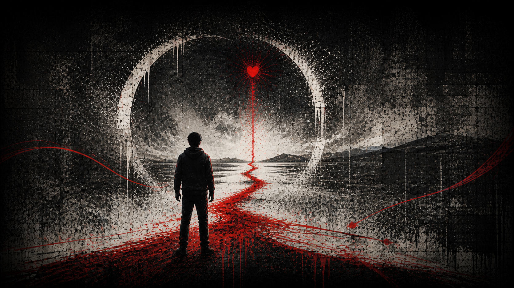

GhostHeart's Purpose 02His five ways forward
Hope
Keep moving forward.
Keep one ember alive when certainty is gone.
One heart in motion

Keep moving forward.
Keep one ember alive when certainty is gone.
Inside GhostHeart's Hope
Read the full path from what this purpose answers to how GhostHeart carries it forward.
Hope answers every night GhostHeart believed the story had already ended.
He keeps one ember alive even when certainty is gone.
Keep moving. Keep creating. Make survival visible.